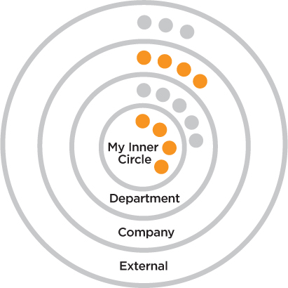

Think of the brand ecosystem as spheres of influence that create perceptions about your brand (Figure 5.1).
The old adage that “perception is reality” has never been truer than in branding.
When Hillary Freeman ran for City Council, she needed to educate key influencers about who she was and what she stood for. She created positive word of mouth among influencers in the neighborhood groups, business community and special interest groups as a desirable council candidate. She had an ecosystem model and she worked it successfully. We will look at Hillary’s ecosystem model shortly, but first we need to define the brand ecosystem.
Figure 5.1
Brand Ecosystem Model

The brand ecosystem consists of spheres of influence that create perceptions about your brand. Figure 5.1 shows a simple ecosystem model where you are at the center, your group or department is the next sphere, then the company at large, ending with the external world. The ecosystem model can also be represented as a pie wedge cut from these concentric circles, so that it looks like an inverted pyramid (see Figure 5.2).
The brand ecosystem is a model for brand references and for communications. This important branding step provides a systematic way to:
•Develop your brand ecosystem model
•Understand the path of reference-checking and communications
•Identify your key Influencers or potential partners
•Determine win-win goals, challenges and actions to manage influencer relationships
When you are a candidate for a job or a leadership opportunity, your ecosystem references are key to your credibility. When you are looking for funding, venture capitalists engage in “due diligence” interviews with your ecosystem to ensure that you are what you say are.
Imagine that you needed back surgery. It’s unlikely you would choose your surgeon randomly—the stakes are too high. You would probably ask for recommendations from other doctors, friends and family, and you’d likely do online research on the backgrounds and consumer ratings of surgeon candidates. Only then would you feel reassured that you were choosing the right surgeon. Likewise, when you apply for a job or try to get funded, others will seek ecosystem reassurance. They don’t want to risk their reputations or business outcomes on someone whose background or ideas cannot be verified.